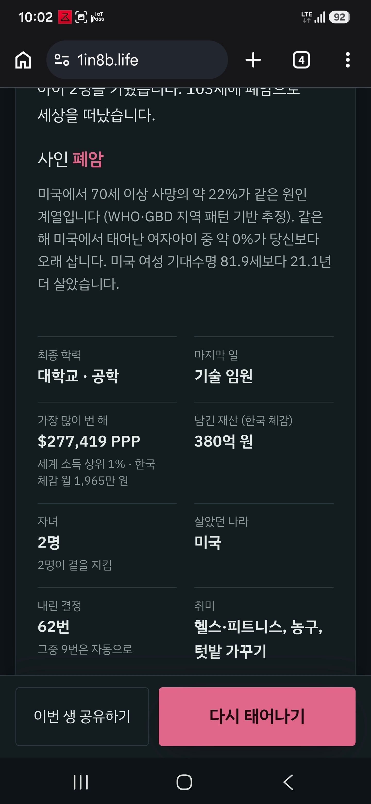
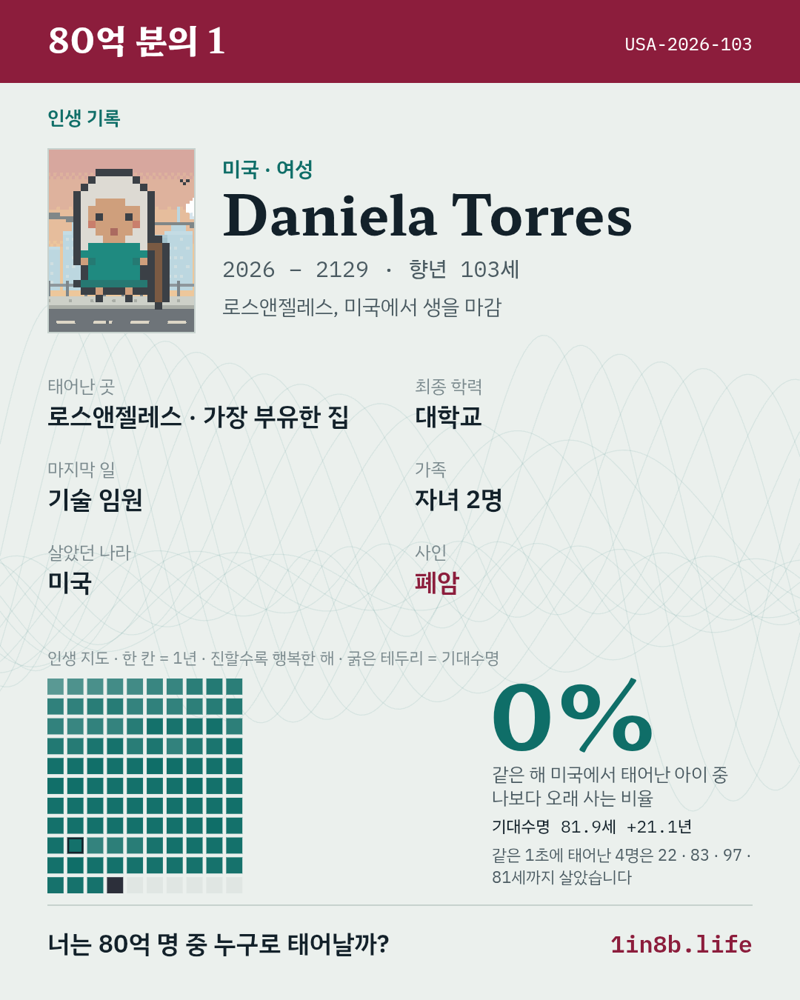

103세
남긴재산 380억
어느순간부터 주식 연전연승으로 복사되더니
개부자됨....
현실에서 내 주식은 어째서...


103세
남긴재산 380억
어느순간부터 주식 연전연승으로 복사되더니
개부자됨....
현실에서 내 주식은 어째서...
저게 니 주식인생 최고 수익인거야 운을 다썼어
필리핀 · 여성
Mylene Ramos
2026 – 2127 · 향년 101세 · 세부 필리핀
필리핀 농촌 마을의 넉넉하지 않은 집에서 여자아이로 태어났습니다. 대학에서 간호학을 공부했습니다. 간호부장으로 일하다 은퇴했습니다. 아이 2명을 키웠습니다. 101세에 뇌졸중으로 세상을 떠났습니다.
졸라오래살다간다..
애초에 가장.부유한집에서 태어낫네
폐암
어떤부모밑에서 태어났는지가 ㅈㄴ 크네 씹 ㅋㅋㅋ
부모가챠라는 말이 괜히 있는 이야기가 아니구나
아닌데? 부모 도움 하나도 없었는데?
내가 노력해서 이루어낸건데?
맞는데? gpt한테 물어보니까 부모 지원 없었으면 성공 못했을 가능성이 크다던데?
우크라이나 출신 여자 안나 본다렌코
태어난곳 키이우 근교의 깡촌
직업 물리치료사
학사졸
자녀 2명 손주 2명
65세에 유방암으로 사망
로또 1등을 여기다 썼누
일본여성으로 미국국적 귀화해서 2억남기고 손주3에 91살에 사망 그담엔 인도 못살다가71이고 브라질 부자에서 태어남
중국 정저우에서 중산층 여자아이로 태어나 평범하게 자람. 대학은 교육학을 전공했지만 졸업 후 전기공이 됨. 27세에 결혼해서 딸을 낳고 캐나다로 이민. 시민권을 따고 나만의 사업체를 차려 나름 성공함. 노년에는 중국으로 다시 돌아와 몇년 일하다 69세에 은퇴. 97세에 순자산 2억을 남기고 만성폐쇄성폐질환으로 사망.